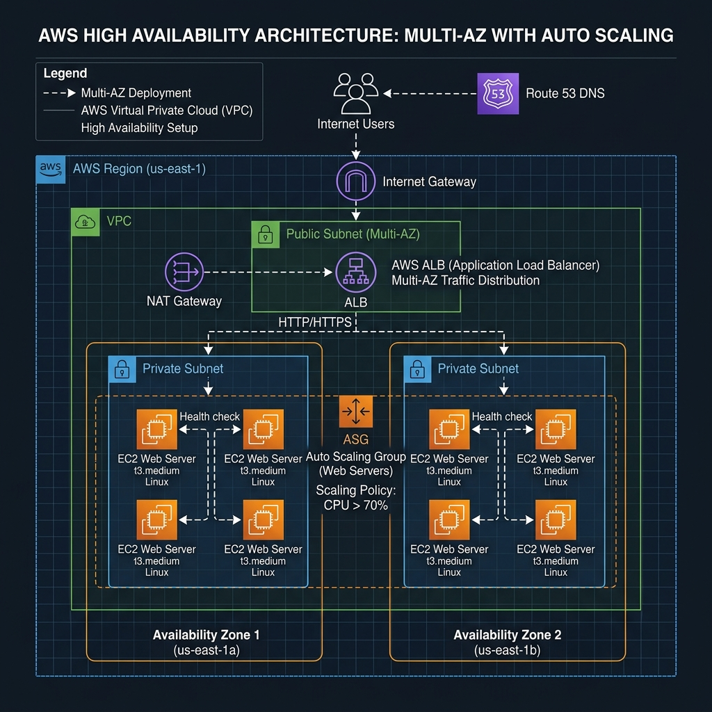

ロードバランサー (ELB)
- ALB: HTTP/HTTPS (L7) 用。パスベースルーティング等。
- NLB: TCP/UDP (L4) 用。超高速・低遅延。固定IP(EIP)利用。
- ヘルスチェック: 異常なインスタンスを自動で切り離す機能。

ELB は、複数のEC2インスタンスへ負荷を分散し、システムの耐障害性を高めます。
graph TD
User((User)) --> ALB["ALB - Application Load Balancer"]
subgraph ASG[Auto Scaling Group]
ALB --> EC2_A[EC2 Instance A]
ALB --> EC2_B[EC2 Instance B]
end
CW[CloudWatch] -- 負荷を監視 --> ASG
ASG -- 台数を増減 --> EC2_C[EC2 Instance C]
style ALB fill:#ff9900,stroke:#fff;
style ASG fill:#232f3e,stroke:#fff;
オートスケーリング (ASG)
- 希望容量: 維持したいインスタンスの台数。
- スケーリングポリシー: 負荷に応じて自動増減するルール。
- 自己修復: 異常なインスタンスを自動で入れ替える。
Auto Scalingは、サーバーの台数を動的に増減させる仕組みです。アクセスが増えた際に自動的にサーバーを「追加」し、負荷が下がれば「削除」することで、コストを最適化します。
- 起動テンプレート: どのようなサーバー（AMI, タイプ等）を起動するかを定義。
- ターゲット追跡ポリシー: 「平均CPU使用率を50%に保つ」などの指示に従い、自動で計算して増減させます。
CloudWatch 監視
- メトリクス: CPU、NW、ディスク使用率などの数値データ。
- アラーム: 数値が閾値を超えた時にアクションを実行。
- ログ: サービスやEC2内のログを集中管理。
CloudWatchは「AWSの目」です。何か異常があったとき（CPUが100%に張り付いた、EC2が死んだ、など）を検知し、自動復旧や管理通報の中心的なハブとなります。
- ダッシュボード: サーバーの状態を一つの画面にまとめてグラフ表示できます。
- Logs Insights: 何万行もあるログからエラーの推移を瞬時に検索できます。
通知 (SNS)
- トピック: メッセージの配信先となるグループ。
- サブスクライブ: メール、Slack、Lambdaなど、通知の受取形式。
Amazon SNS (Simple Notification Service)は、メッセージ配信サービスです。CloudWatchアラームと連動させることで、深刻なエラーが発生した瞬間に管理者に通知を飛ばすといった「自動通報」の仕組みが完成します。